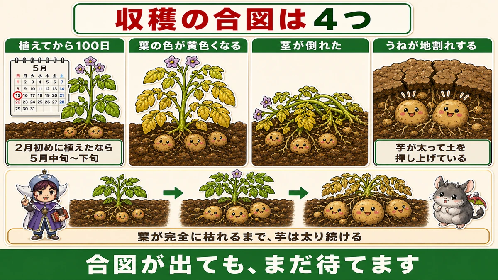
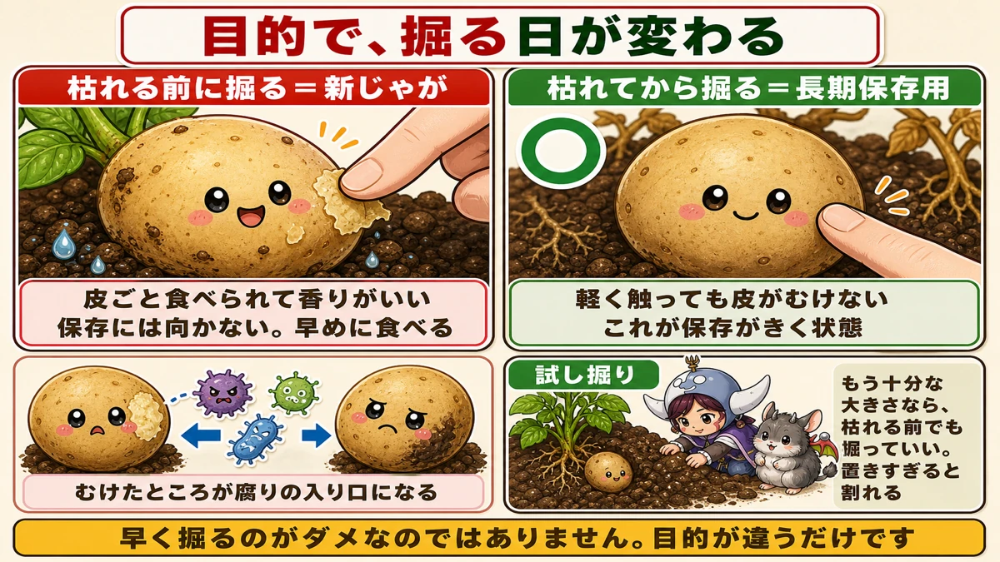
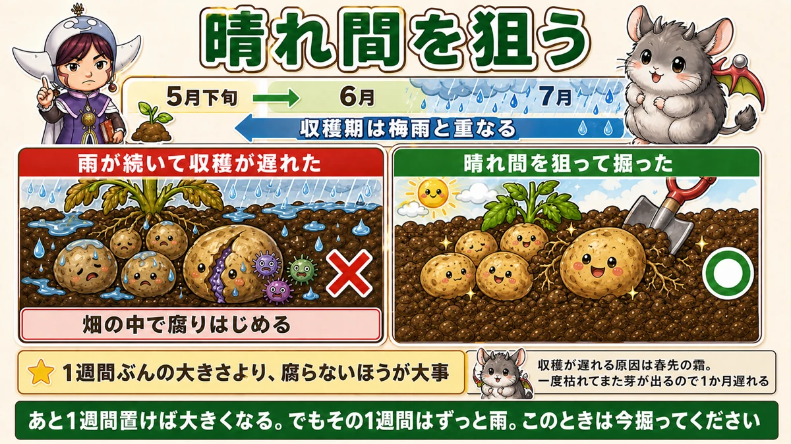
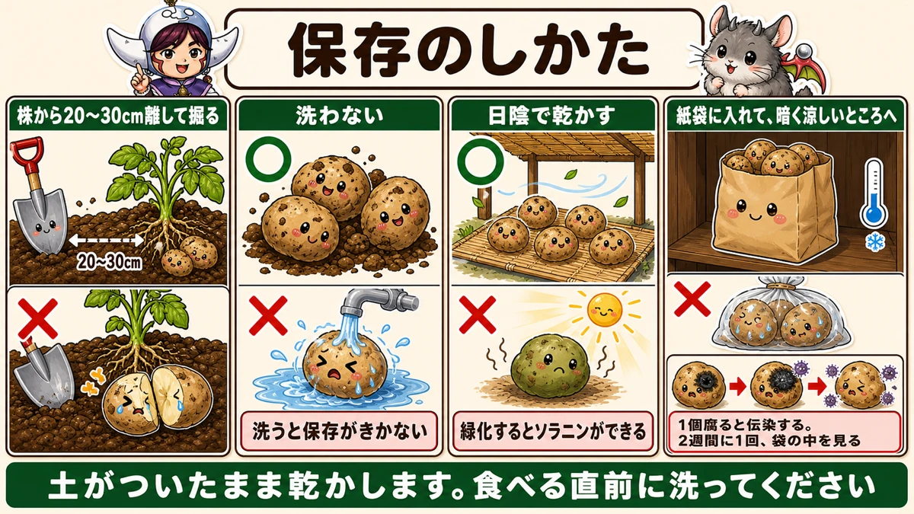

枯れる前に掘ると、皮がむけます🥔 だから腐ります

🗨️「いつ掘ればいいのか分からない」
🗨️「掘ったあと、いくつか腐ってしまった」
🗨️「もっと大きくしたくて、待ちすぎた」
どうも、8150（えいこう）です🌱 家庭菜園歴8年、理科の教員免許を持っていて、有機・無農薬で野菜を育てています。
2月に植えたじゃがいもが、そろそろ穫れます。
じゃがいもは、育てるのは簡単なのに、★収穫のタイミングだけが難しい野菜です。
先に、この記事でいちばん言いたいことを言っておきます。
★枯れる前に掘ると、皮がむけます。そして、そこから腐ります。
だから「いつ掘るか」の答えは、★すぐ食べるのか、長く保存するのかで変わります☺️
収穫の合図、4つ
どれかが出たら、掘りどきが近い
まず、一般的な目安からお話しします。

★1. 植えてから100日
2月初めに植えたなら、5月中旬から下旬あたりです。
★2. 葉の色が黄色くなってきた
緑が抜けて、全体が黄色っぽくなってきます。
★3. 茎が倒れた
支えきれなくなって、地面に寝るように倒れます。
★4. うねが地割れを起こした
これが面白いサインです。★中の芋が太って、土を下から押し上げています。地面にひびが入っていたら、そこには大きい芋があります。
合図が出ても、まだ待てます
ここが大事なところです。
★葉が完全に枯れるまで、芋は太り続けます。
黄色くなったからといって、すぐ掘る必要はありません。★ギリギリまで置いておけば、そのぶん大きくなります。
じゃあ、なぜみんな迷うのか。次の話があるからです。
★★すぐ食べるか、保存するか
ここで答えが分かれます
じゃがいもの収穫時期の話がややこしいのは、★正解がひとつではないからです。
目的によって、掘る日が変わります。

★長期保存するなら、枯れてから
長く置いておきたいなら、★葉が完全に枯れてから掘ってください。
理由は、皮です。
★枯れる前に掘ると、皮がまだ薄くて、掘るときに擦れてむけます。
そして★むけたところが、腐りの入り口になります。1個腐ると、まわりにも移ります。
★枯れてから掘った芋は、軽く触っても皮がむけません。しっかりしています。これが「保存がきく状態」です。
★新じゃがは、それを承知で掘るもの
では、新じゃがはどうなのか。
★新じゃがは、葉が枯れる前に掘ったじゃがいもです。
皮が薄くてやわらかい。皮ごと食べられて、香りがいい。★あの持ち味は、まさに「まだ皮が締まっていない」ことから来ています。
だから★早く掘るのがダメなのではありません。目的が違うだけです。
- ★すぐ食べる → 枯れる前でもいい。新じゃがを楽しむ
- ★長く保存する → 枯れてから掘る
★同じ畑で、半分は早く、半分は枯れてから、という掘り方もできます。私はこれをやっています。
★逆に、置きすぎると割れます
もうひとつ、注意点があります。
生育がとても順調で、★すでに大きい芋ができている株。これは枯れるまで待つと、★大きくなりすぎて割れることがあります。
だから★試し掘りをしてください。
株の脇を少し掘って、1個だけ確認する。★もう十分な大きさなら、枯れる前でも掘っていいです。
★梅雨とのにらみ合い
収穫期は、雨の季節と重なります
じゃがいもの収穫が難しいいちばんの理由が、これです。
★収穫期が、梅雨と重なります。

雨が続くと、割れて腐ります
★雨が多いときに収穫が遅れると、芋が割れたり腐ったりします。
土の中に水がたまると、芋が急に水を吸って膨らみます。★皮が追いつかずに、内側から裂けます。
そして裂けたところから、土の中の菌が入る。★掘る前に、畑の中で腐りはじめます。
★晴れ間を狙う
だから、こうしてください。
★天気予報を見て、晴れ間を狙って掘る。
「あと1週間置けば大きくなるけれど、その1週間はずっと雨」
このときは、★迷わず今掘ってください。1週間ぶんの大きさより、腐らないほうが大事です。
前に「暑さが来る前に穫り終える」という話をしました。★あれの、雨バージョンだと思ってください。相手の予定に、こちらが合わせます。
掘った日に、雨に当てない
掘った芋を、そのまま畑に置いておかないでください。
★濡れた芋は、保存がききません。晴れた日の午前中に掘って、その日のうちに乾かします。
収穫が遅れているとき
★原因は、たいてい霜です
「6月になっても、葉が枯れる気配がない」
こういうことがあります。原因はたいてい、春先の霜です。
★じゃがいもは霜に当たると、いったん地上部が枯れます。
でも★じゃがいもは強いので、そこからまた新しい芽を出します。復活するんです。
ただし、★そのぶん収穫が1か月ほど遅れます。
4月号の話とつながります
前に、霜は気温3℃前後で降りる、というお話をしました。
★2月下旬に植えたじゃがいもは、その後の遅霜に当たる可能性があります。
芽出しをして早く植えた年ほど、この危険があります。★早ければ早いほどいい、とはならないのが難しいところです。
掘り方
★株から離れたところに、スコップを入れる
掘るときのコツです。
★株のすぐ横を掘らないでください。
芋は株を中心に広がっています。すぐ横にスコップを入れると、★育った芋を真っ二つに切ります。
★20〜30cmほど離れたところから、株の方向へ差し込んで持ち上げる。
前に土寄せの話で「遠めの土を使う」とお伝えしました。★理由はまったく同じです。芋は思っているより外側にあります。
手で探す
スコップで持ち上げたら、あとは★手で土をかき分けて探してください。
株についてこなかった芋が、土の中に残っています。★小さいものも含めて、全部拾ってください。残すと、そこから翌年に芽が出て、連作のもとになります。
保存のしかた

★洗わない
いちばん大事なことです。
★掘った芋を洗わないでください。
きれいにしたくなりますが、★洗うと保存がききません。水気が残って、そこから腐ります。
土がついたまま、乾かします。食べる直前に洗ってください。
★日陰で乾かす
次に乾燥です。
★日陰で、風通しのいい場所に広げて乾かします。
★日なたに置かないでください。日に当たると緑色になります。緑になった部分には★ソラニンという毒素ができます。
前に、土寄せの話でお伝えしたのと同じです。★掘ったあとも、光は敵です。
半日から1日、表面の土が乾いてさらさらになるまで置きます。
★紙袋に入れる
乾いたら、★紙袋に入れてください。
ビニール袋はいけません。★湿気がこもって蒸れます。段ボールでも構いません。★通気性があることが条件です。
★暗くて涼しいところへ
置き場所は、★暗くて涼しいところです。
★明るいところに置くと、芽が出ます。そして緑になります。
床下収納、押し入れの奥、日の当たらない土間。家の中でいちばん暗くて涼しい場所を探してください。
★ときどき、見る
最後にひとつ。
★1個腐ると、健全な芋にも伝染します。
袋の中で1個が傷むと、そこから隣へ、また隣へと広がっていきます。気づいたときには全部だめになっていた、ということが起こります。
★2週間に1回くらい、袋の中を見てください。傷んだものを1個抜くだけで、残りが助かります。
掘る日を、天気予報で決める
この記事の要点
- 収穫の合図は★①植えて100日 ②葉が黄色くなる ③茎が倒れる ④★うねが地割れする
- ★葉が完全に枯れるまで、芋は太り続ける
- ★★長期保存するなら、葉が枯れてから掘る
- ★枯れる前に掘ると皮が擦れてむけ、そこが腐りの入り口になる
- ★枯れてから掘った芋は、触っても皮がむけない
- ★新じゃがは、枯れる前に掘ったもの。皮が薄いのが持ち味
- ★早く掘るのがダメなのではなく、目的が違うだけ
- ★試し掘りをして、もう十分な大きさなら枯れる前でも掘っていい
- ★置きすぎると、大きくなりすぎて割れることがある
- ★★収穫期は梅雨と重なる。雨で芋が割れて、畑の中で腐る
- ★晴れ間を狙って掘る。1週間ぶんの大きさより、腐らないほうが大事
- ★濡れた芋は保存がきかない。晴れた日の午前中に掘る
- 収穫が遅れる原因は★春先の霜。一度枯れてまた芽が出るので1か月遅れる
- 掘るときは★株から20〜30cm離してスコップを入れる。芋は外側にある
- ★小さい芋も全部拾う。残すと翌年芽が出て連作のもとになる
- ★洗わない。洗うと保存がきかない
- ★日陰で乾かす。日に当たると緑化してソラニンができる
- ★紙袋か段ボールへ。ビニールは蒸れる
- ★暗くて涼しいところに置く。明るいと芽が出る
- ★1個腐ると伝染する。2週間に1回、袋の中を見る
全部やろうとしなくて大丈夫です。まずは1株だけ、試し掘りをしてみてください。★大きさを見てから、残りをいつ掘るか決められます🥔
次回は、玉ねぎの話。収穫のサインと、長く保存するための吊るし方をお話しします🧅
ここまで読んでくださって、ありがとうございました。
米袋（紙）
じゃがいもの保存は、光を通さず、湿気もこもらないもの。紙の米袋がちょうどいい。
![[商品価格に関しましては、リンクが作成された時点と現時点で情報が変更されている場合がございます。]](https://hbb.afl.rakuten.co.jp/hgb/56bc3119.f1f4196c.56bc311a.c9ac6e4e/?me_id=1215024&item_id=10001843&pc=https%3A%2F%2Fthumbnail.image.rakuten.co.jp%2F%400_mall%2Fkminori%2Fcabinet%2Fhozai%2Fimg57520728.jpg%3F_ex%3D240x240&s=240x240&t=picttext "[商品価格に関しましては、リンクが作成された時点と現時点で情報が変更されている場合がございます。]")

収穫メッシュバッグ
掘ったその場で入れて、風を通したまま運べます。

乾燥剤
保存箱に一緒に入れておくと、梅雨のあいだの腐りを減らせます。
![[商品価格に関しましては、リンクが作成された時点と現時点で情報が変更されている場合がございます。]](https://hbb.afl.rakuten.co.jp/hgb/56eb9618.3f325504.56eb9619.e861bcb7/?me_id=1358935&item_id=10000079&pc=https%3A%2F%2Fthumbnail.image.rakuten.co.jp%2F%400_mall%2Fhw-enable%2Fcabinet%2Fsilicagel%2Ffujigel%2F10gn.jpg%3F_ex%3D240x240&s=240x240&t=picttext "[商品価格に関しましては、リンクが作成された時点と現時点で情報が変更されている場合がございます。]")
じゃがいもシリカ
切り口を保護する資材です。次の作付けで種芋を切るときに。
![[商品価格に関しましては、リンクが作成された時点と現時点で情報が変更されている場合がございます。]](https://hbb.afl.rakuten.co.jp/hgb/565b74ce.f30a48e7.565b74cf.8a827250/?me_id=1368676&item_id=10000491&pc=https%3A%2F%2Fthumbnail.image.rakuten.co.jp%2F%400_mall%2Farakawaseed%2Fcabinet%2Fcompass1582111506.jpg%3F_ex%3D240x240&s=240x240&t=picttext "[商品価格に関しましては、リンクが作成された時点と現時点で情報が変更されている場合がございます。]")
あわせて読みたい